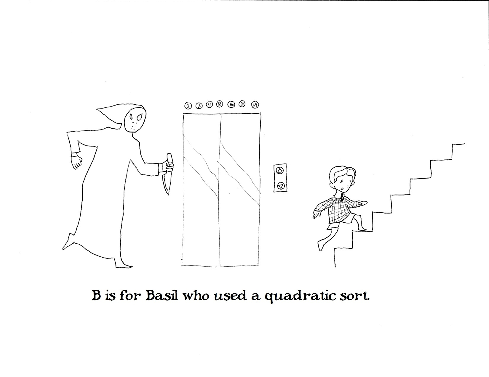
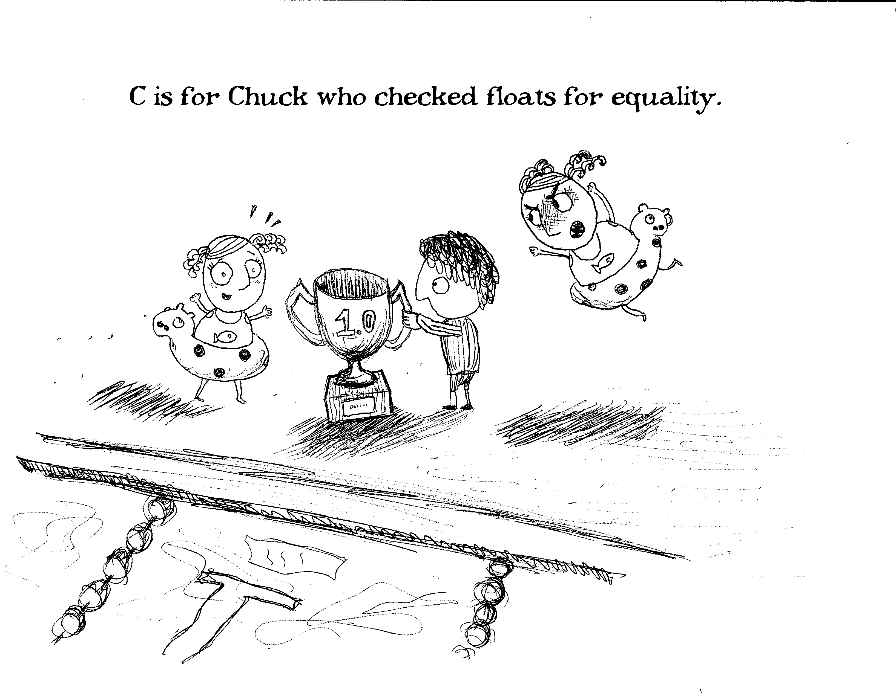
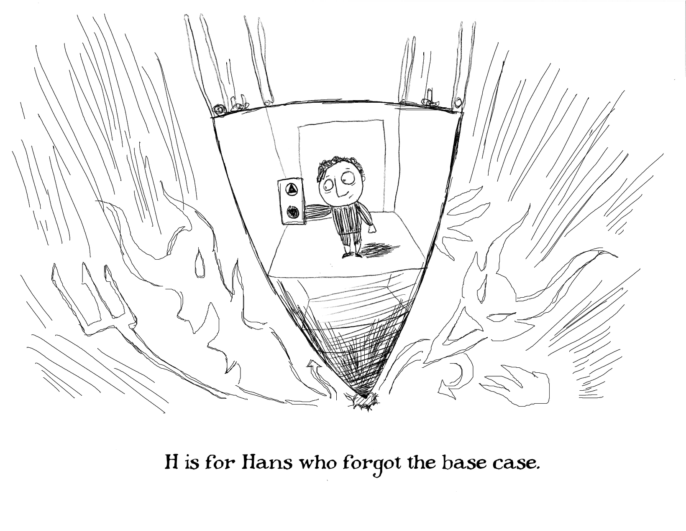
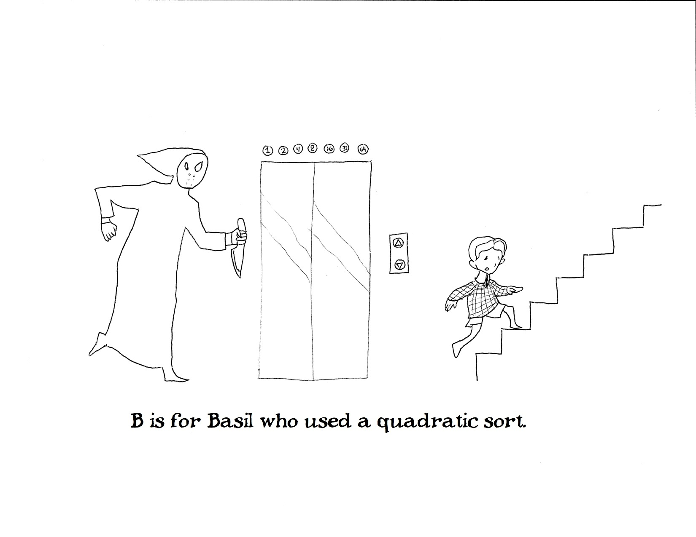
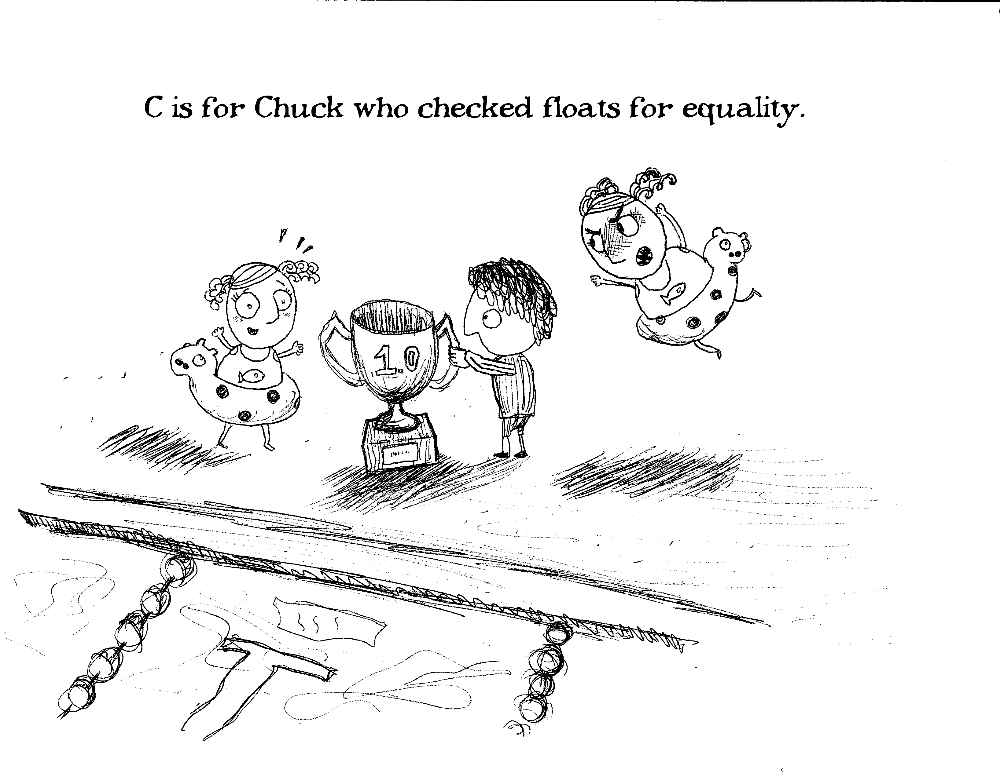
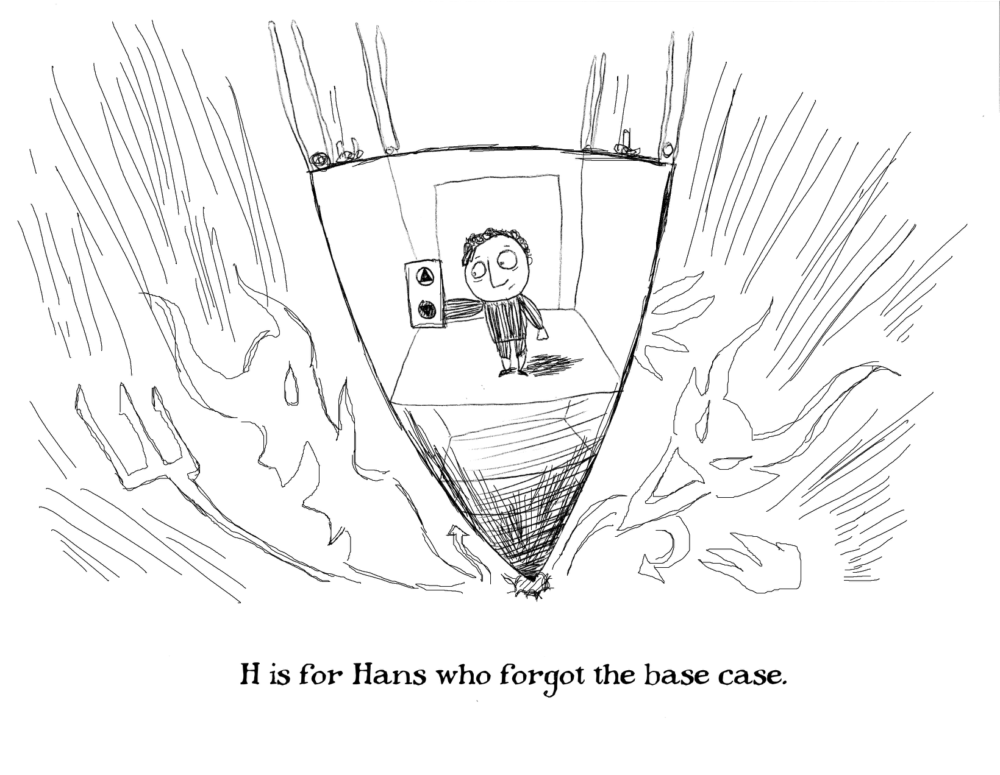

Gashlycode Tinies
The Gashlycode Tinies are a series of cartoons meant to mimic Edward Gorey's Gashlycrumb Tinies, focused instead on the various simple pitfalls that entering CS students often encounter.







The Gashlycode Tinies are a series of cartoons meant to mimic Edward Gorey's Gashlycrumb Tinies, focused instead on the various simple pitfalls that entering CS students often encounter.


